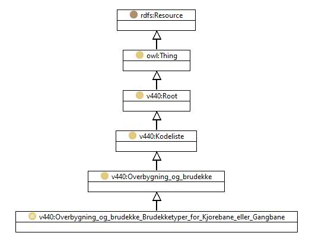

https://ontologi.atlas.vegvesen.no/v440/core/v440-owl#Overbygning_og_brudekke_Brudekketyper_for_Kjorebane_eller_Gangbane
Class v440:Overbygning_og_brudekke_Brudekketyper_for_Kjorebane_eller_Gangbane

rdf:type
owl:Class
rdfs:label
Brudekketyper (for Kjørebane eller Gangbane)
Bridge deck types (for roadway or walkway)
rdfs:subClassOf
v440:Overbygning_og_brudekke
owl:oneOf
[
v440:Overbygning_og_brudekke_Brudekketyper_for_Kjorebane_eller_Gangbane_Aluminiumsdekke
,
v440:Overbygning_og_brudekke_Brudekketyper_for_Kjorebane_eller_Gangbane_Annet_brudekke
,
v440:Overbygning_og_brudekke_Brudekketyper_for_Kjorebane_eller_Gangbane_Betongelementer_uten_pastop
,
v440:Overbygning_og_brudekke_Brudekketyper_for_Kjorebane_eller_Gangbane_Bridge-plank
,
v440:Overbygning_og_brudekke_Brudekketyper_for_Kjorebane_eller_Gangbane_Betong_plasstopt
,
v440:Overbygning_og_brudekke_Brudekketyper_for_Kjorebane_eller_Gangbane_Betongelementer_med_pastop
,
v440:Overbygning_og_brudekke_Brudekketyper_for_Kjorebane_eller_Gangbane_Staldekke
,
v440:Overbygning_og_brudekke_Brudekketyper_for_Kjorebane_eller_Gangbane_Tredekke
,
v440:Overbygning_og_brudekke_Brudekketyper_for_Kjorebane_eller_Gangbane_Gitterrister
]
v440:avsnitt
V-8.2
v440:kapittel
V-8
v440:kode
-
Instances
v440:Overbygning_og_brudekke_Brudekketyper_for_Kjorebane_eller_Gangbane_Aluminiumsdekke
,
v440:Overbygning_og_brudekke_Brudekketyper_for_Kjorebane_eller_Gangbane_Annet_brudekke
,
v440:Overbygning_og_brudekke_Brudekketyper_for_Kjorebane_eller_Gangbane_Betong_plasstopt
,
v440:Overbygning_og_brudekke_Brudekketyper_for_Kjorebane_eller_Gangbane_Betongelementer_med_pastop
,
v440:Overbygning_og_brudekke_Brudekketyper_for_Kjorebane_eller_Gangbane_Betongelementer_uten_pastop
,
v440:Overbygning_og_brudekke_Brudekketyper_for_Kjorebane_eller_Gangbane_Bridge-plank
,
v440:Overbygning_og_brudekke_Brudekketyper_for_Kjorebane_eller_Gangbane_Gitterrister
,
v440:Overbygning_og_brudekke_Brudekketyper_for_Kjorebane_eller_Gangbane_Staldekke
,
v440:Overbygning_og_brudekke_Brudekketyper_for_Kjorebane_eller_Gangbane_Tredekke
References
as owl:disjointUnionOf (
v440:Overbygning_og_brudekke
)
as rdfs:range (
harBrudekkeType
)
Generated with
TopBraid Composer
by
TopQuadrant, Inc.